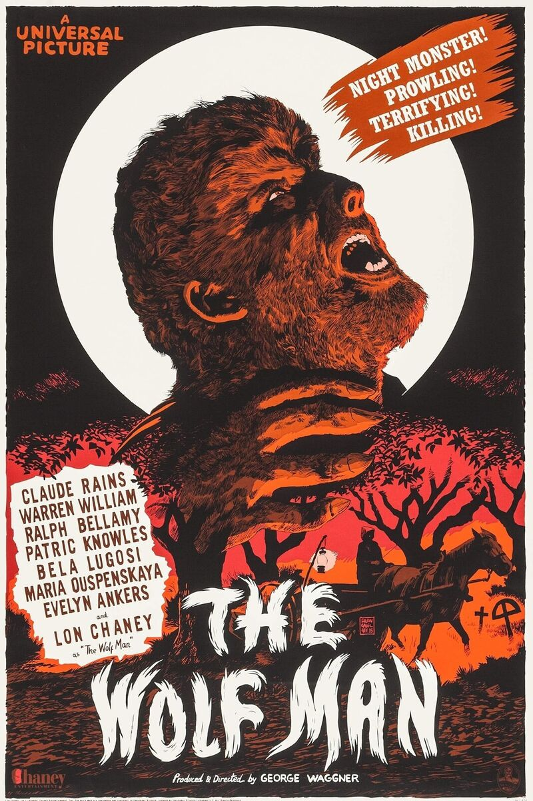
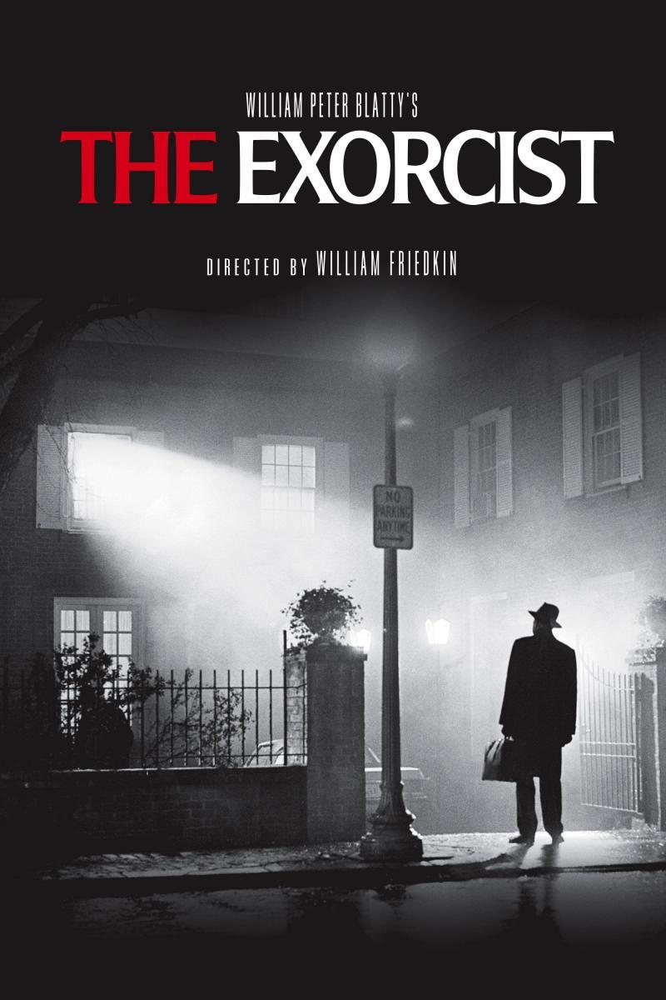
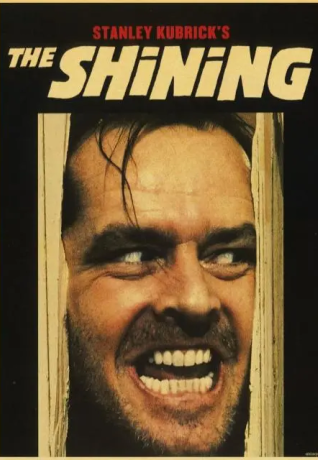

La Momia (1932)

Dato curioso: Boris Karloff tardaba hasta 8 horas en maquillarse como la momia. Además, el rodaje era extremadamente caluroso, lo que hacía que el maquillaje se derritiera.
El Hombre Lobo (1941)
Dato curioso: El actor Lon Chaney Jr. soportaba largas sesiones de maquillaje con una técnica de stop-motion para la transformación.
Nosferatu (1922)

Dato curioso: Max Schreck, el actor principal, era tan convincente que se rumoreaba que era un vampiro real.
El Exorcista (1973)
Dato curioso: Se dice que el rodaje estuvo "maldito" debido a accidentes y muertes inesperadas del equipo.
Psicosis (1960)

Dato curioso: La famosa escena de la ducha utilizó jarabe de chocolate como sangre falsa.
El Resplandor (1980)
Dato curioso: Stanley Kubrick torturó emocionalmente a Shelley Duvall para hacer su actuación más creíble.
La Noche de los Muertos Vivientes (1968)

Dato curioso: Los "zombis" comían jamón cubierto con salsa de chocolate para simular carne humana.